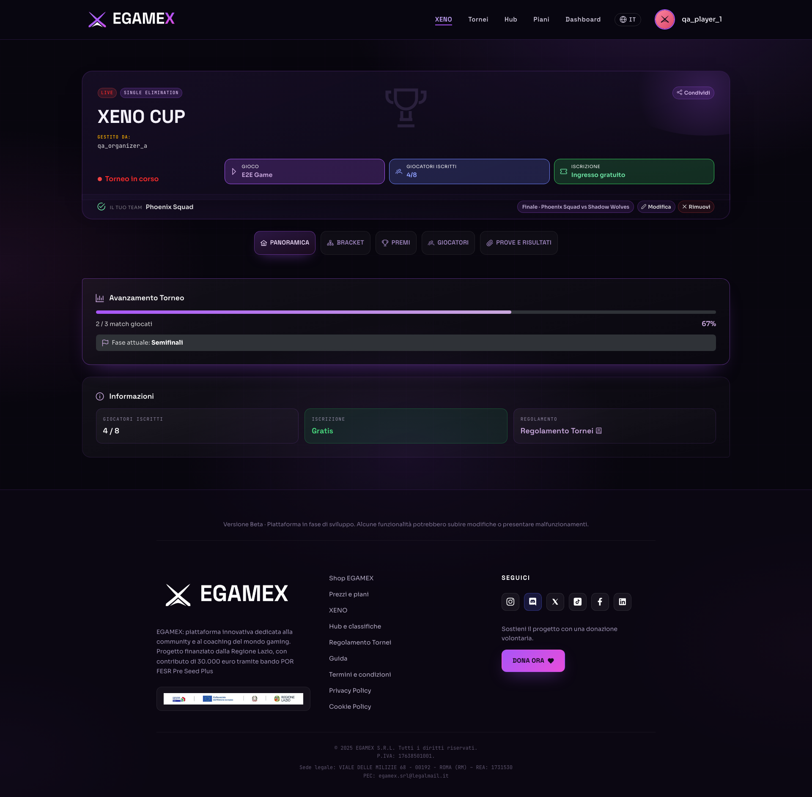

Live product · Co-founder & CTO · since 2024
An ecosystem for competitive gaming.
I lead the product and technical direction across web, backend and automation—from architecture to production.
- End-to-end tournament management across multiple formats
- XENO Discord bot, gamified hub and PayPal subscriptions
- €30k pre-seed grant from Regione Lazio
Next.jsStrapiTypeScriptDiscordAI workflows